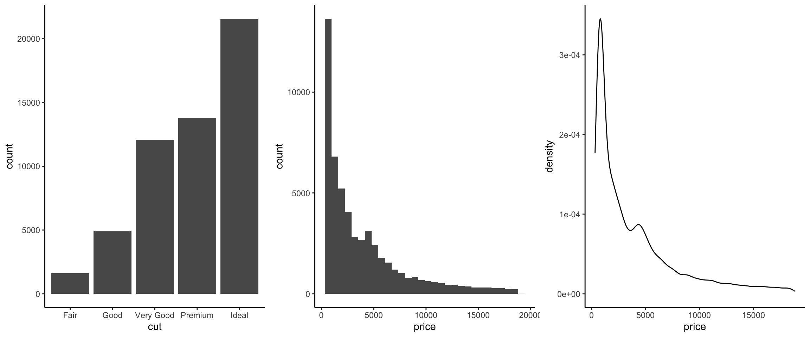
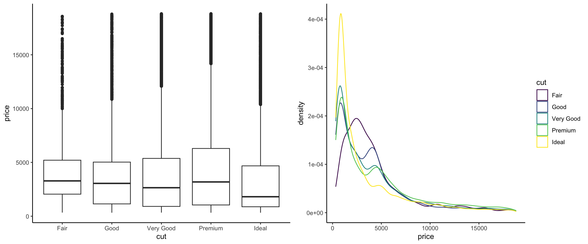
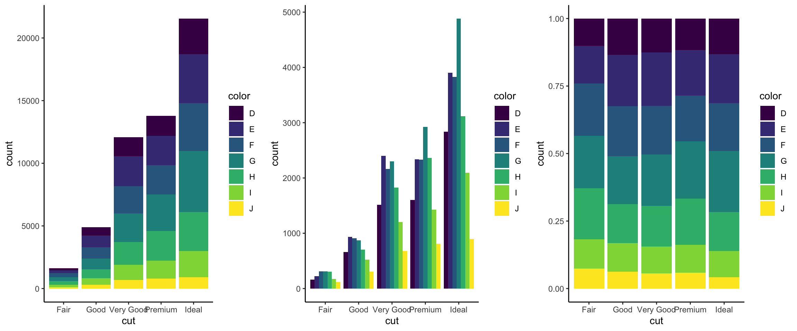
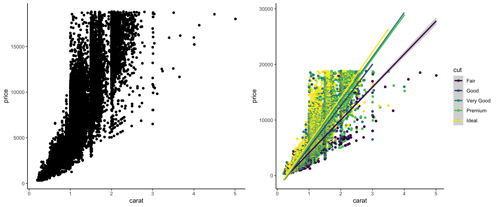

library(ggplot2)
data(diamonds)Schedule
Course Calendar
Readings in the schedule below refer to the following textbooks (freely available online):
- R for Data Science (2e) by Wickham, Cetinkaya-Rundel, and Grolemund (Abbreviated as R4DS)
- R Programming for Data Science (Abbreviated as RPDS)
- Modern Data Science with R (3e) by Baumer, Kaplan, and Horton (Abbreviated as MDSR)
Guiding questions for the readings are available at the bottom of this page.
| Week | Tuesday | Thursday | Announcements |
|---|---|---|---|
| 1 |
9/5: Welcome! Meeting each other and designing our learning community Before class: Review the syllabus and think about the questions posed in the green "Reflect" blocks. |
9/7: Advanced visualization in ggplot Before class: Review the construction of plots from STAT 112 and STAT 155. Answer the Guiding Questions at the bottom of this page. |
Work on HW0 (your 10-year vision, doesn't need to be turned in). Look ahead to HW1 |
| 2 |
9/12: Advanced map visualization Before class: Watch this video on Coordinate Reference Systems, and answer the Guiding Questions at the bottom of this page. |
9/14: Advanced map visualization (continued) |
Turn in HW1 by midnight on Wed 9/13. Look ahead to HW2 due Wednesday 9/20 at midnight. |
| 3 |
9/19: Interactive visualization Before class: Listen to this podcast from Chapter 7 (timestamp 18:09) through Chapter 8 (ending at timestamp 25:27). Answer the Guiding Question at the bottom of this page. Install the "shiny" and "plotly" R packages. |
9/21: Classroom Community and Connectedness (CC&C) Survey For the first 30 minutes, we will move our course projects forward. In the last hour of class, CC&C facilitators will come in to run an activity on how community-building is going in our course. |
Turn in HW2 by midnight on Wednesday 9/20. Look ahead to HW3. |
| 4 | 9/26: Data wrangling: numbers, logicals, and dates Helpful readings (read before or after class): (All from R4DS) Chapter 13 (Logicals), Chapter 14 (Numbers), and Chapter 18 (Dates/Times) |
9/28: Data wrangling: strings Helpful readings (read before or after class): (All from R4DS) Chapter 15 (Strings) and Chapter 16 (Regular Expressions) |
Turn in HW3. Look ahead to HW4 (Project Miletone 2). |
| 5 |
10/3: Data wrangling: factors Helpful readings (read before or after class): Chapter 17 (Factors) (R4DS). |
10/5: Writing functions Helpful readings (read before or after class): R4DS Chapter 26 (Functions) and RPDS Section 13.1 (if-else). |
Turn in Project Milestone 2 by either Wed 10/4 or Wed 10/11 at midnight. Start looking at Reflection 1. |
| 6 |
10/10: Loops and iteration Helpful readings (read before or after class): Chapter 27 (Iteration) and this tutorial. |
10/12: Loops and iteration | Turn in HW4 (Project Milestone 2) by Wed 10/11 if you haven't already. Turn in Reflection 1 by Wed 10/11. |
| 7 |
10/17: Data acquisition: APIs Helpful readings (read before or after class): |
10/19: Data acquisition: Scraping Helpful readings (read before or after class): rvest vignette |
|
| 8 |
10/24: Project feedback & styling your personal site with HTML and CSS Project progress presentation #1: Your team will present a 5-7 minute progress report and plan for next steps After project presentations, we will learn a bit more about HTML and CSS so that you can style your personal websites. |
10/26: No class - Fall Break 🍁 | |
| 9 |
10/31: Data acquisition: databases Helpful readings (read before or after class): R4DS Chapter 22 (Databases). |
11/2: Causal inference and machine learning in data science | |
| 10 |
11/7: Missing data: wrangling and missingness mechanisms Helpful readings (read before or after class): |
11/9: Missing data: imputation | |
| 11 |
11/14: Likely Python, GitHub, and topics of your choosing from this poitn onward |
11/16: Project presentations Project progress presentation #2: Your team will give a 10 minute presentation with intermediate results for 2 research questions. |
Guiding Questions
Do your best to answer guiding questions before the indicated class period. Responses don’t need to be turned in, but answering helps you prepare effectively for class.
9/7: Advanced visualization in ggplot
To review plot creation skills from STAT/COMP 112 and STAT 155, use the diamonds dataset in the ggplot2 package to recreate the following visualizations:




9/12: Advanced map visualization
After/while watching this video on Coordinate Reference Systems (CRS), answer the following questions:
- What is the shape of the Earth?
- Why is GDA94 a great datum name?
- What are the two components of a CRS/GCS?
- Why do we use many different local CRSs rather than just one CRS for the whole earth?
- Why is it insufficient to identify a location by its latitude and longitude?
- Why do we need to be mindful about CRSs when working with different spatial datasets?
9/19: Interactive visualization
After listening to this podcast from Chapter 7 (timestamp 18:09) through Chapter 8 (ending at timestamp 25:27), reflect on the following question:
- What was new, unexpected, or interesting in the discussion about animations, interactivity, and dashboards?